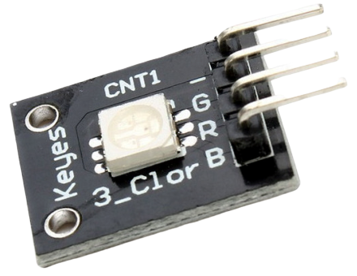
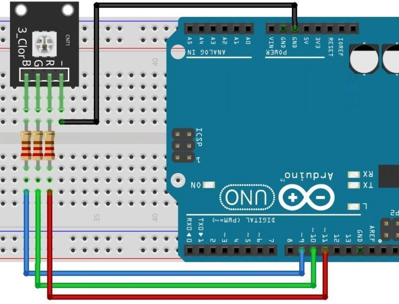

Светодиодный модуль KY-009
На плате модуля KY-009 расположены два компонента: трехцветный светодиод 5050 full color и штыревой соединитель имеющий 4 контакта. Светодиод содержит три излучателя света красного, зеленого и синего цветов. Они могут светиться одновременно или поочередно. Модуль RGB светодиода (SMD) применяется для индикации режимов работы приборов, подсветки ЖКИ индикаторов и клавиш. Используется в игрушках и сложной развлекательной технике. Многоцветная подсветка предоставляет широкий простор для дизайнерских решений, что важно в рекламе, для оформления клубов, концертных залов и при проведении различных массовых мероприятий.
Технические характеристики модуля KY-009:
- Цвета свечения:
- насыщенный красный;
- чистый зеленый;
- синий.
- Яркость, кандел:
- красный — 0,72;
- зеленый — 1,3;
- синий — 0,35.
- Ток каждого излучателя, мА:
- номинальный — 20;
- предельный постоянный — 25;
- предельный импульсный — 100.
- Прямое номинальное напряжение, В
- красный — 2;
- зеленый — 3,4;
- синий — 3,4.
- Предельное обратное напряжение — 5 В
- Температура окружающего воздуха, °C:
- при работе -40…85;
- хранения -40…100.


Назначение выводов представлено в таблице 1.
Таблица 1
| Контакт | Назначение |
|---|---|
| R | красный (+) |
| G | зеленый (+) |
| B | синий (+) |
| — | Общий (GND) |
Источники
arduino-tex.ru - KY-009 - Модуль RGB светодиода (SMD). Подключение к Arduino